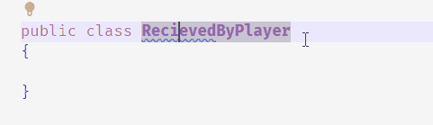

Spell check in VSCode
2023-01-28
Due to this blog I'm writing a bit more regular texts in vscode I'm reminded of how horrible my spelling is. Luckily there is a nifty extension for that called Code spell checker. This also seems to work very well for, which given that it's for VSCode may not be that surprising but still.
A potential spelling error is highlighted by blue squiggly lines and you can use the normal quick fix shortcut ctrl+. to change it.
